![[sound]](sound.gif)
GBDK includes several example programs both in C and in assembly. They are located in the examples directory, and in its subdirectories. They can be build by typing make in the correnponding directory.
space.s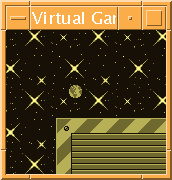
The space.s example is an assembly program that demonstrates the use of sprites, window, background, fixed-point values and more. The following keys are used:
Arrow keys : Change the speed (and direction) of the sprite
Arrow keys + A : Change the speed (and direction) of the window
Arrow keys + B : Change the speed (and direction) of the background
START : Open/close the door
SELECT : Basic fading effect
galaxy.c
The galaxy.c example is a C translation of the space.s assembly program.
paint.c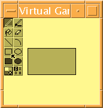
The paint.c example is a painting program. It supports different painting tools, drawing modes, and colors. At the moment, it only paints individual pixels. This program illustrates the use of the full-screen drawing library. It also illustrates the use of generic structures and big sprites. It is definitely worth having a look at its source. The following keys are used:
Arrow keys : Move the cursor
SELECT : Display/hide the tools palette
A : Select tool
sound.c
The sound.c example is meant for experimenting with the soung generator of the GameBoy (to use on a real GameBoy). The four different sound modes of the GameBoy are available. It also demonstrates the use of bit fields in C (it's a quick hack, so don't expect too much from the code). The following keys are used:
UP/DOWN : Move the cursor
RIGHT/LEFT : Increment/decrement the value
RIGHT/LEFT+A : Increment/decrement the value by 10
RIGHT/LEFT+B : Set the value to maximum/minimum
START : Play the current mode's sound (or all modes if in control screen)
START+A : Play a little music with the current mode's sound
SELECT : Change the sound mode (1, 2, 3, 4 and control)
SELECT+A : Dump the sound registers to the screen
rpn.c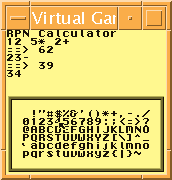
The rpn.c example is a basic RPN calculator. Try entering expressions like 12 134* and then 1789+.
banks.c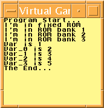
The banks.c example illustrates how to make multiple-banks programs.
ram_fn.c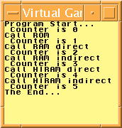
The ram_fn.c example illustrates how to copy functions to RAM or HIRAM, and how to call them from C.
irq.c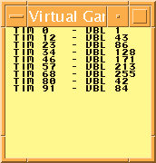
The irq.c example illustrates how to install interrupt handlers.
comm.c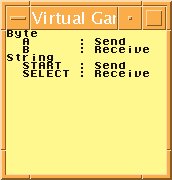
The comm.c example illustrates how to use communication routines.
gb-dtmf/gb-dtmf.c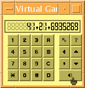
The gb-dtmf/gb-dtmf.c program, written by Osamu Ohashi, is a Dual Tone Multi-Frequency (DTMF) generator.
colorbar/colorbar.c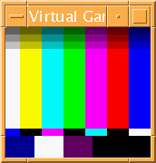
The colorbar/colorbar.c program, written by Mr. N.U. of TeamKNOx, illustrates the use of colors on a Color GameBoy.
dscan/dscan.c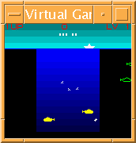
Deep Scan (dscan/dscan.c) is a game written by Mr. N.U. of TeamKNOx that supports the Color GameBoy. Your aim is to destroy the submarines from your boat, and to avoid the projectiles that they send to you. The game should be self-explanatory. The following keys are used:
RIGHT/LEFT : Move your boat
A/B : Send a bomb from one side of your boat
START : Start game or pause game
When game is paused:
SELECT : Invert A and B buttons
RIGHT/LEFT : Change speed
UP/DOWN : Change level
rand.c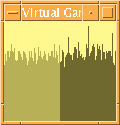
The rand.c program, written by Luc Van den Borre, illustrates the use of the GBDK random generator.